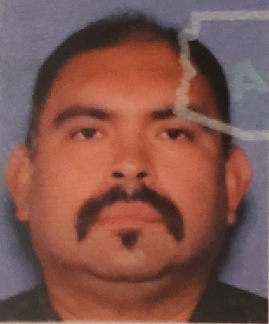

José Jesús Betancourt

Summary
Detailed-oriented multi-lingual collaborative software QA test engineer with 13+ years of experience in
the software industry. Skilled at writing test cases from specifications and extremely effective
troubleshooting and problem solving. Excel at interacting positively with analysts and development
programmers. Patient, dependable, quick learner who is dedicated to meeting customer requirements.
Extensive experience testing IVR Applications.
Education
- Eastern Oregon University
- Fall 2013 - Winter 2014
- Introduciton to Python and Java
- University of Phoenix
- 2011 - 2013
- Informaiton Technology with a conentration in Software Engineering
- Did not graduate
- Walla Walla University
- 1999 - 2003
- Majored in Computer Science
- Did not graduate
- Walla Walla Community College
- 1996 - 1997
- Majored in Computer Science
- Did not graduate
- Walla Walla High School
- 1991 - 1995
- Graduated from high school in 1995
Work Experience
- SLK American, Inc
- July 2022 - Present
- UAT testing IVR applications in English and Spanish
- Verified English and Spanish prompts.
- Verify VISIO Flow design: Call paths and DTMF options.
- Overall customer experience of the IVR applications.
- Used qTest for Test Plans and Test Case creation and defect tracking.
- Experience using Webex Agent Desktop for inbound/outbound testing.
- Strategic Staffing Solutions/TECO Energy
- June 2021 - December 2021
- UAT testing IVR application in English and Spanish
- Verify prompts and translations, various call paths, DTMF options and grammar options.
- Using Azure DevOps (ADO) for test case creation/execution and for defect tracking.
- Using JIRA for defect tracking
- IDC Technologies/American Express
- June 2020 - February 2021
- Tested IVR application in English and Spanish
- Verify prompts and translations, various call paths, DTMF options and grammar options.
- Verified various call journeys.
- Utilized Postman to retrieve test data using various APIs.
- Aventiv Technologies
- January 2018 - May 2020
- Bilingual QA Engineer testing English/Spanish IVR
- Primary Spanish Language QA tester for PCI Compliance for IVR, Web Application & Oracle CRM
- Experience working with Oracle CRM, SOAP UI and HP QC ALM (Quality Center)
- Microsoft SQL Server, Office
- Ampcus, Inc/FISERV
- February 2016 - December 2017
- Bilingual QA Engineer testing English/Spanish IVR, Web & Mobile Web applications
- Created test plans/test cases in English & Spanish
- Tracked QA implementation using TFS for Agile application delivery Voice Objects → Genesys Cloud Migration
- Prepared security reviews using IBM Security AppScan
- Microsoft SQL Server, Office
- Cayuse Technologies
- December 2008 - February 2016
- Lead Spanish Language Tester for IVR Applications.
- Tested both English and Spanish Language Interactive Voice Response (IVR) applications (8+ years).
- Experience creating test plans and test cases.
- Experience with Oracle SQL/SQL*PLUS and UNIX
- Microsoft Office, Microsoft Windows
- Experience testing Android/iPhone/iPad app for a financial institution
- Used HP ALM to keep track of test cases.
- VXML Development (less than 1-year experience)
- Can read and understand Call Flow Diagrams, Technical Requirements
- Good understanding of the SDLC.
- Experience with the following testing methodologies:
- V Model
- Waterfall Model
- Agile Methodology
Skills
| Fluent in English |
⭐⭐⭐⭐⭐ |
| Fluent in Spanish |
⭐⭐⭐⭐⭐ |
| HTML |
⭐⭐⭐ |
| Quality Assurance Testing |
⭐⭐⭐⭐⭐ |
| CSS |
⭐⭐ |
Professional References
- Brian Bruner (Aventiv QA Manger) : 214-728-8164
- Dione Sims (FISERV QA Manager (No longer with FISERV)): 817-317-6262
- Mikey Wartberg (Aventiv Colleague (No longer with Aventiv)): 214-507-3981
Contact Me
|
Hobbies